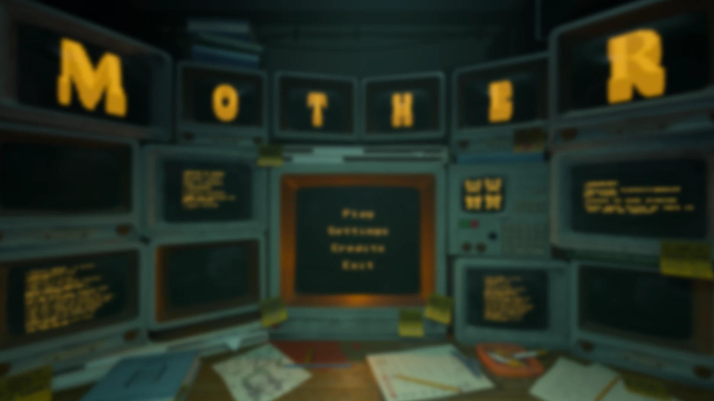
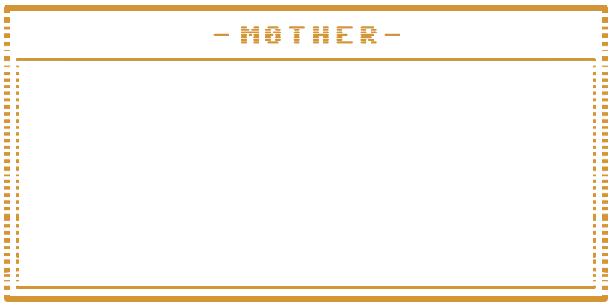
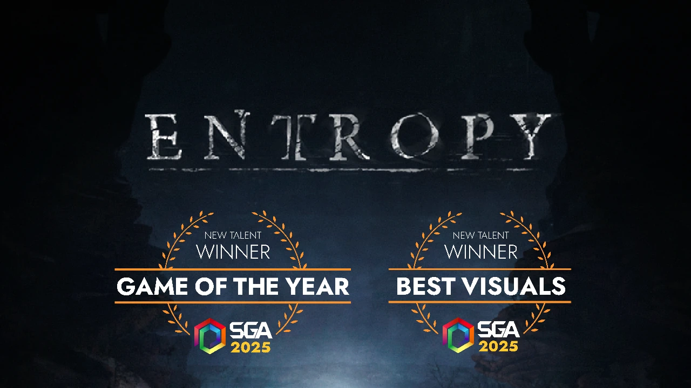
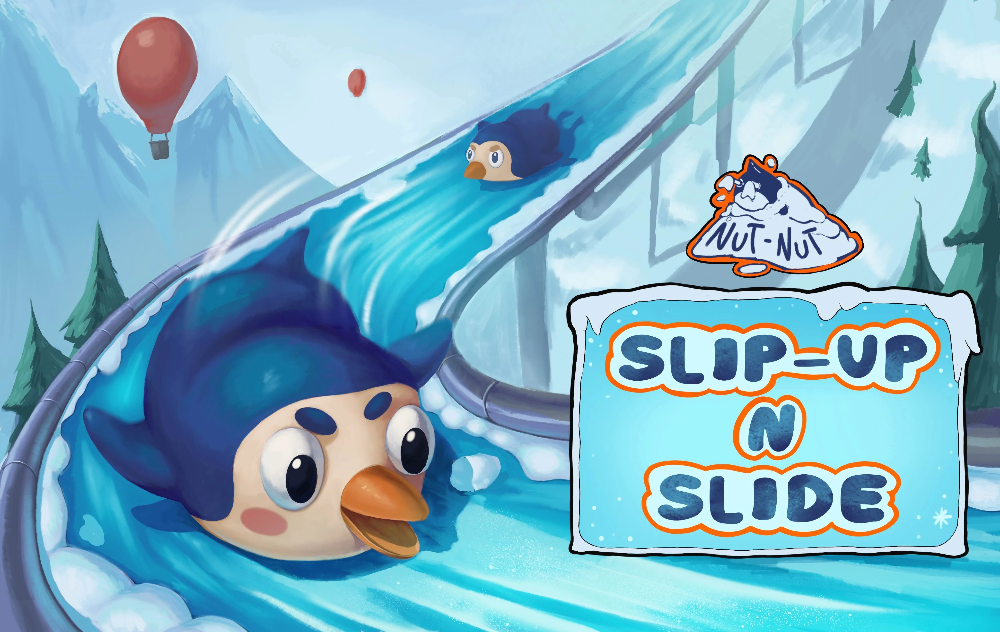
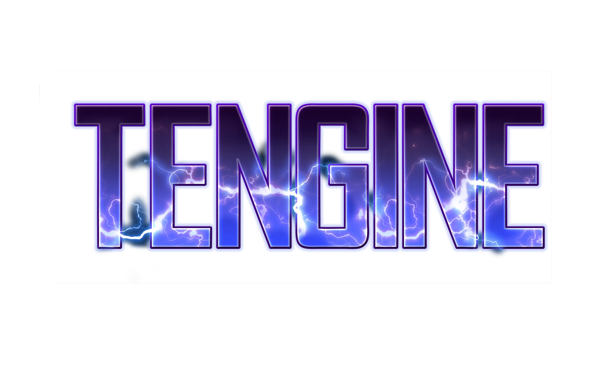

A dark but charming puzzle game about a supercomputer guiding packs of stupid creatures through a deadly testing faciliy


Winner of Swedish Game Awards 2025 Game of the Year & Best Visuals
Nominated for Best Technology



Penguin Couch Co-op Racing Game
Developed in our in-house engine TenGine
